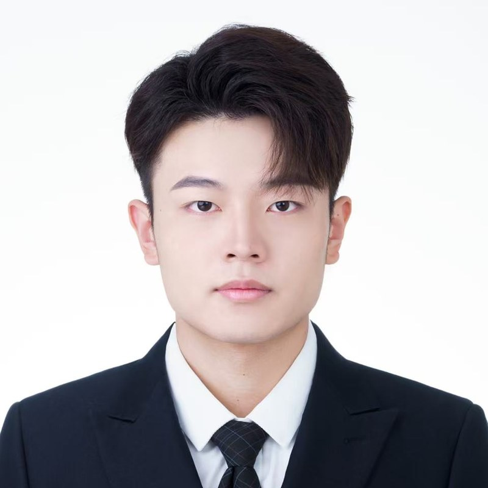

Anomaly Detection
Spatio-temporal graph learning over service metrics for traffic prediction and early anomaly sensing.
Ph.D. Candidate · BUPT
🎓 I am a Ph.D. student at the State Key Laboratory of Networking and Switching Technology, Beijing University of Posts and Telecommunications (BUPT), advised by Prof. Yang Yang. My research lies at the intersection of artificial intelligence and network operations & management (AIOps).
📍 I am currently a joint-training (visiting) Ph.D. student at the Singapore University of Technology and Design (SUTD), working with Prof. Tony Q. S. Quek.
🔍 My recent work spans anomaly detection, root cause localization, incremental fault diagnosis, and autonomous fault remediation for cloud–edge microservice systems. I focus on making large-scale microservice systems reliable, adaptive, and resilient under dynamic workloads, evolving fault patterns, and real-world resource constraints.

Visiting Ph.D. student at SUTD, Singapore
2026.01 – 2027.01News
Research
My research centers on intelligent fault management for microservice systems, with four main interests:
Spatio-temporal graph learning over service metrics for traffic prediction and early anomaly sensing.
Hyperbolic graph representations with agent-based reasoning to pinpoint faulty services in cloud–edge systems.
Class-incremental learning that recognizes newly emerging fault types without forgetting known ones.
LLM-based multi-agent frameworks that plan, execute, and verify remediation actions autonomously.
Publications
JJournal article CConference paper † Corresponding author
Education
State Key Laboratory of Networking & Switching Technology · Advisor: Assoc. Prof. Yang Yang · GPA 91.63 / 100
Advisor: Prof. Tony Q. S. Quek — Fellow of the Academy of Engineering Singapore, IEEE Fellow, WWRF Fellow
Advisor: Prof. Celimuge Wu — Foreign Fellow of the Engineering Academy of Japan, IEEE Senior Member
First-Class Honours B.Eng., Queen Mary University of London · Minor in Intelligent Robotics · GPA 85.76 / 100
Honors & Awards
Academic Service
Contact
I am always happy to discuss research and potential collaborations. Reach me at heyechen@bupt.edu.cn.